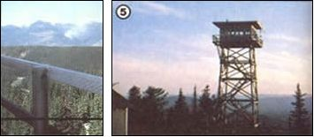
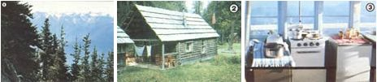

Seasonal outdoor work often requires that one live an elemental life ... but it's an excellent way for would-be homesteaders to practice backwoods skills.
Most folks who are working toward a back-to-the-land move have the determination and spirit (and maybe even the few acres) that are necessary to make a successful go of homesteading. In all too many cases, however, such hopefuls lack solid experience. And no amount of planning, preparation, or good intentions will make your "country" move a smooth one. . . if you aren't already used to the sorts of little day-to-day "peculiarities"that crop up under simple (and maybe even primitive) living conditions.
So how can you acquire such experience before taking the plunge into self-sufficiency? The answer may lie in a compromise . . . that is, in a temporary situation that'll give you an opportunity to test yourself and to see - before you invest a lot of blood, sweat, and tears into that homestead - whether you really can make it without a lot of the comforts that you just might be taking for granted.
And one of the best ways to test your ability to live a simpler life is to find seasonal work in a national park or forest. On most such jobs you'll live in primitive housing - often with no electricity or running water - where you'll have the chance to practice the kinds of skills that successful homesteading requires . . . while also helping the cause of forest preservation. Every year, thousands of temporary positions are offered by the National Park and U.S. Forest Services . . . providing a prospective employee with the chance to serve as almost anything from campground host and park guard to fire lookout and smoke jumper.
Whether you accept paid employment or simply fill in as a volunteer, the value of your experience will depend upon what you make of it. And even if you don't plan to move back to the land someday, you'll find wilderness work to be natural, healthful, and useful . . . because you'll be helping to preserve and protect some of the few remaining wild places in the United States.
So, to give you a taste of what life is really like as a temporary employee, we're glad to be able to present the experiences that two MOTHER-readers - both of whom did their outdoor stints on the West Coast - had while living and working in the wilderness. Read on . . . you're bound to be inspired by their reports.
Related Articles:
LOOKOUT-TOWER LIVING
A SEASON IN THE OLYMPICS
|
 LEFT: Fire watchers are responsible for spotting smoke plumes (such as distant ""cloud"" in this picture) withina 20-mile radius. RIGHT: A tree house that's above the trees: This tower rises 40 feet from an Idaho mountaintop. |
 LEFT: Life as a back-country park guard can be solitary. . . but it offers beautiful views, such as this one in Washington's Olympic Mountains. CENTER: Seasonal employees usually live in simple ? and comfortable ? dwellings in national parks. RIGHT: The kitchen in a lookout tower is necessarily compact. . . and organized! |
|